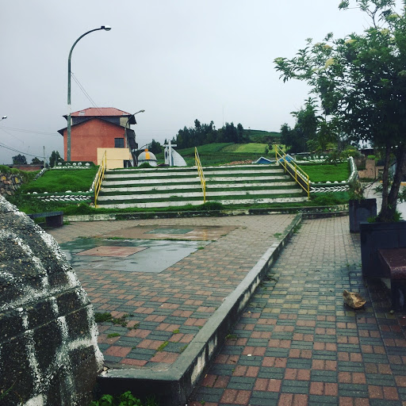
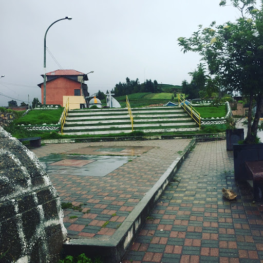

Nuestro Barrio Querido

1Te Contamos Que:
En nuestro Barrio, podrás disfrutar de la tranquilidad y la paz que caracterizan a los barrios más antiguos de la ciudad, así como de la belleza de sus calles y plazas, donde podrás encontrar una gran variedad de tiendas, restaurantes y lugares de entretenimiento para toda la familia. Además, en este barrio podrás conocer la rica historia y tradición de Jauja, a través de sus monumentos y edificios históricos, y disfrutar de eventos culturales y festividades que se celebran a lo largo del año. En resumen, el Barrio La Samaritana es un lugar que te enamorará con su encanto y calidez, y te aseguramos que una vez que lo visites, no querrás irte nunca más. ¡Te esperamos con los brazos abiertos en nuestro hermoso barrio!
2 Nuestra Historia
La historia del barrio en Jauja está llena de leyendas y tradiciones. Una de ellas es la historia de la Samaritana y Jesús. Según la Biblia, Jesús se encontró con una mujer samaritana en un pozo en Samaria. Él le pidió agua y ella se sorprendió porque Jesús era judío y ella samaritana, y los judíos y samaritanos no solían interactuar entre sí. Sin embargo, Jesús le habló sobre el agua que da vida eterna y la mujer quedó impresionada por su sabiduría.
3Los Cobarrianos
Este barrio tiene una larga transcendencia en la ciudad, ya que sus cobarrianos son ilustres ciudadanos Jaujinos, y es por esto que la historia de "La Samaritana Y Jesus" tiene un significado especial. El barrio tiene más de 100 años de creación y se dice que en momentos de sequía en la ciudad de Jauja, el barrio acogió y abasteció de agua a sus habitantes. Al igual que Jesús ofreció agua que da vida eterna a la mujer samaritana, el barrio La Samaritana ofreció agua a los habitantes de Jauja en momentos de necesidad.
Galeria
 



Nuestras Costumbres
El Carnaval Jaujino
Además de su rica historia, el barrio La Samaritana también ofrece una oportunidad para experimentar la vida y la cultura local. Puedes pasear por sus calles y conocer a sus habitantes, disfrutar de la comida local y visitar lugares históricos y monumentos. En resumen, visitar el barrio La Samaritana en Jauja es una oportunidad única para sumergirse en la historia y la cultura local y experimentar la hospitalidad y generosidad de sus habitantes.
Devocio y Fe ala Virgen de Fatima
La historia de la Virgen de Fátima se remonta al 13 de mayo de 1917, cuando tres niños pastores portugueses afirmaron haber visto una aparición de la Virgen María. Los niños, Lucía, Francisco y Jacinta, dijeron que la Virgen les habló y les dio un mensaje de amor, paz y arrepentimiento para la humanidad
La Tunantada
El barrio La Samaritana en Jauja es un lugar lleno de historia y tradiciones. Con más de 100 años de creación, este barrio tiene una rica cultura y leyendas que lo hacen único. Una de las leyendas más conocidas es la de cómo el barrio acogió y abasteció de agua a los habitantes de Jauja en momentos de sequía.